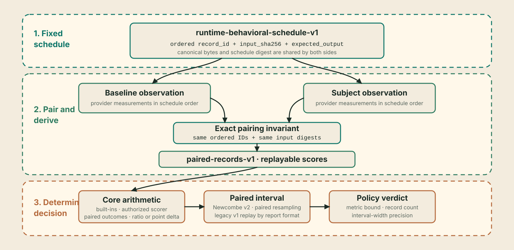

Schedule and policy¶
The evaluation source defines which ordered records both sides score. The metric defines the paired comparison. The policy defines the conservative interval bound that must clear its threshold. Their exact identities are bound into the evidence.
Treat them as one decision specification:
- the pinned JSONL bytes and mapping determine the finite schedule;
- the built-in metric or bound scorer determines each record score;
- the selected comparison's paired interval describes uncertainty or schedule sensitivity; and
- the policy determines where the interval passes or fails.
InvarLock authenticates, executes, and replays this specification. It does not choose a representative sample or a suitable threshold for you.

User guide
Outcome: Freeze a digest-pinned local JSONL source and one closed comparison policy before collecting subject results.
Audience: Evaluation owners, dataset curators, policy authors, and independent decision owners.
Prerequisites: A concrete release-regression claim, fixed source material, stable record identities, a supported built-in metric or authorized scorer binding, and an independent policy-distribution path.
Design the decision first¶
- State the concrete release-regression claim in one sentence.
- Identify the operational context to which that sentence applies.
- Select prompts and expected outputs without inspecting subject outcomes.
- Choose
exact_matchfor literal closed answers ornormalized_nll_per_utf8_bytefor teacher-forced expected-continuation likelihood regression, or bind an explicitly authorized deterministic text scorer for a task-specific unit-interval result. - Select the threshold, unit, conservative interval bound, and failure action.
- Freeze the JSONL bytes, field mapping, optional exact prefix, and SHA-256.
- Freeze the policy bytes and distribute an independent copy to verifiers.
A reviewable claim is:
Compare the fixed subject with the fixed baseline on these 400 ordered release prompts. Reject when the lower bound of the paired exact-match delta interval is below minus two percentage points. Any artifact, source, expected-output, decoding, metric, resampling, or threshold change creates a new transaction.
That is narrower and more reproducible than “the new model is as good as the old model.”
Primary input: pinned local JSONL¶
Run requests identify source bytes and field mapping directly:
dataset:
path: inputs/release-regression.jsonl
sha256: 4444444444444444444444444444444444444444444444444444444444444444
format: jsonl
name: release-regression
split: validation
input_field: prompt
expected_output_field: expected
id_field: case_id
limit: 400
Each selected line is one JSON object:
{"case_id":"release/001","prompt":"Return A","expected":"A"}
{"case_id":"release/002","prompt":"Return B","expected":"B"}
InvarLock verifies the source SHA-256 before parsing, preserves line order, selects exactly the declared prefix, maps the named top-level text fields, and builds canonical schedule bytes. The source limit cannot silently shrink: a file with fewer selected lines fails.
If id_field is absent, deterministic position IDs are generated as
record/00000000, record/00000001, and so on. Prefer durable source IDs when
they exist; they make a failed record identifiable outside one array position.
The source may contain additional metadata fields, but only the declared ID, input, and expected-output fields enter the schedule. Preserve any separate provenance, licenses, or adjudication records needed to justify the selection.
Canonical prepared schedule¶
The prepared contract is
invarlock/runtime-behavioral-schedule-v1.
It contains dataset identity and ordered records:
{
"dataset_identity": {
"config_name": "evaluation-records-jsonl-v1",
"dataset_name": "release-regression",
"provider": "local",
"revision": "4444444444444444444444444444444444444444444444444444444444444444",
"split": "validation"
},
"format_version": "invarlock/runtime-behavioral-schedule-v1",
"records": [
{
"expected_output": "A",
"input_parts": [
{
"kind": "text",
"role": "prompt",
"sha256": "577b00dc694a427d676d63076c8bb19ff06800e09242cf3f078c3c8580c1c367",
"text": "Return A"
}
],
"input_sha256": "99997ee448561eff2f1ca7635038e8ca56ec584c1a968b8ca8803bee4551538b",
"record_id": "release/001"
}
],
"task": "text_causal"
}
Canonical schedule JSON uses UTF-8, recursively sorted keys, compact separators,
finite numbers, and no trailing newline. Run mode prepares it inside the
transaction. Import mode instead requires the canonical file at both
comparison.dataset and execution.schedule.
InvarLock recomputes:
text_part.sha256 = SHA-256(UTF-8(text_part.text))
input_sha256 = SHA-256(canonical JSON of ordered input_parts)
schedule_sha256 = SHA-256(canonical schedule bytes)
The normalized request preserves the source digest and field mapping. The prepared schedule binds the resulting dataset identity, order, inputs, targets, IDs, and selection. Both are included in the signed evidence transaction.
Closed limits include:
| Boundary | Limit |
|---|---|
| Local JSONL source or canonical schedule | 16 MiB |
| Selected records | 1 to 10,000 |
record_id |
256 characters |
| Text in one input part | 65,536 characters |
| Input parts per record | 64 |
expected_output |
65,536 characters |
| Dataset name | 512 characters |
| Split | 128 characters |
Record order is semantic. Baseline and subject observations must contain the same IDs in exactly schedule order and repeat each corresponding input digest. Pairing by position under different IDs, dropping errors, or sorting after execution is rejected.
Curate the finite schedule¶
Review each selected record:
| Field | Review question |
|---|---|
| ID | Is it stable, unique, and meaningful outside array position? |
| Input | Is this the exact prompt and template both sides should receive? |
| Expected output | Is literal equality or teacher-forced scoring appropriate? |
| Source identity | Can the decision owner explain where the bytes came from? |
| Category metadata | Is coverage of the intended release behavior documented outside the schedule? |
For larger schedules, check:
- duplicates and near-duplicates;
- train/test or benchmark contamination;
- empty, malformed, or trivially predictable records;
- representation across behavior categories in scope;
- expected-output provenance and adjudication;
- prompt templates and hidden prefixes; and
- repeated tuning exposure to the subject developer.
These are governance and sampling controls outside the schema. A valid but biased schedule remains biased.
Metric-specific paired intervals¶
New invarlock/comparison-report-v2 reports use the continuity-corrected
paired Newcombe hybrid-score 95% interval over the subject-minus-baseline
binary effect. The report also records baseline-pass to
subject-fail regressions, baseline-fail to subject-pass improvements, both-pass
and both-fail counts, and the exact two-sided McNemar probability. The policy
uses the Newcombe interval's lower bound; the McNemar probability is supporting
paired evidence rather than an acceptance control.
Strict verification retains the original
newcombe_hybrid_score_paired_v1 calculation for signed
invarlock/comparison-report-v1 packs. New reports use
newcombe_hybrid_score_paired_v2; existing evidence is not relabeled or
reinterpreted.
Normalized NLL uses the following deterministic schedule-resampling object:
{
"method": "paired_percentile_bootstrap_sha256_v1",
"scope": "authenticated_schedule",
"interval_mass": 0.95,
"replicates": 2048,
"lower": 0.0,
"upper": 2.5
}
For each replicate and draw, InvarLock derives an index from SHA-256 of the authenticated schedule digest, replicate number, and draw number. It resamples schedule positions with replacement and recomputes the complete paired comparison. Percentile endpoints are the linearly interpolated 2.5th and 97.5th percentiles across 2,048 values. A one-record schedule produces a point interval.
The algorithm never separates one baseline score from its paired subject score. Its result is deterministic across verifier replay and does not depend on a platform pseudo-random-number generator.
The normalized-NLL interval measures stability under paired resampling of this finite authenticated schedule. Because the selected records are not asserted to be an independent random sample from a defined population, the interval is not a population confidence interval. It does not establish representativeness, statistical power, equivalence, non-inferiority, or production safety.
Exact-match policy¶
{"resolved_policy":{"metrics":{"exact_match":{"delta_min_pp":-2.0,"maximum_interval_width_pp":10.0,"minimum_record_count":400}}}}
For baseline accuracy B and subject accuracy S:
point_delta_pp = 100 * (S - B)
pass when interval.lower >= delta_min_pp
and record_count >= minimum_record_count
and interval.width <= maximum_interval_width_pp
A value of -2.0 requires even the paired interval's lower bound to remain at
or above a two-percentage-point drop. The point delta may be above the floor
while the verdict still fails because its interval crosses the floor.
The paired-binary section distinguishes regressions (baseline pass, subject fail) from improvements (baseline fail, subject pass). It reports their exact two-sided McNemar probability and the Newcombe 95% interval for the effect size. Only the interval lower bound controls the metric-threshold part of this policy; configured count and width controls remain additional requirements.
The count and precision controls are optional, but they are coupled: provide
both or neither. minimum_record_count must be an integer from 1 through
10,000. maximum_interval_width_pp must be positive and no greater than 200.
When present, both must pass in addition to the lower-bound rule. A 400-record
schedule satisfies a minimum of 400, but it does not guarantee a 10-point
interval; precision is known only after execution.
| Point delta | Interval | Minimum | Result |
|---|---|---|---|
+1 pp |
[-1, +3] |
-2 pp |
pass |
0 pp |
[-2, +2] |
-2 pp |
pass at boundary |
0 pp |
[-3, +3] |
-2 pp |
fail |
Normalized-NLL policy¶
{"resolved_policy":{"metrics":{"normalized_nll_per_utf8_byte":{"maximum_interval_width_ratio":0.05,"minimum_record_count":400,"ratio_max":1.05}}}}
For each record and side:
record_nll = -logprob_sum / utf8_byte_count
point_ratio = arithmetic_mean(subject_record_nll) / arithmetic_mean(baseline_record_nll)
pass when interval.upper <= ratio_max
and record_count >= minimum_record_count
and interval.width <= maximum_interval_width_ratio
The baseline arithmetic mean must be positive. Each scheduled record has equal aggregate weight regardless of target length. This is not pooled NLL, a byte-weighted mean, or perplexity.
This metric is teacher-forced expected-continuation likelihood regression under the authenticated prompt, target, provider, and runtime. It is not a measure of general model quality, instruction following, factuality, or user preference.
The count and ratio-width fields are optional but must be supplied together. The count uses the same 1-through-10,000 limit; the maximum ratio width must be positive. These requirements qualify the authenticated schedule size and observed resampling precision. They do not turn the fixed schedule into a population sample.
| Point ratio | Interval | Maximum | Result |
|---|---|---|---|
0.98 |
[0.96, 1.02] |
1.05 |
pass |
1.01 |
[0.98, 1.05] |
1.05 |
pass at boundary |
1.01 |
[0.98, 1.08] |
1.05 |
fail |
Deterministic scorer-extension policy¶
An extension scorer policy pins the complete algorithm identity selected by the request:
{
"resolved_policy": {
"metrics": {
"scorer_extension": {
"scorer_id": "example.token_f1",
"scorer_version": "1.0.0",
"descriptor_sha256": "5555555555555555555555555555555555555555555555555555555555555555",
"configuration_sha256": "6666666666666666666666666666666666666666666666666666666666666666",
"delta_min_pp": -2.0,
"maximum_interval_width_pp": 10.0,
"minimum_record_count": 400
}
}
}
}
The request binding and policy pins must match exactly. The authorized scorer
maps each authenticated expected-output/output-text pair to one deterministic
higher-is-better value in [0,1]. Core owns the remaining arithmetic:
baseline_mean = arithmetic_mean(baseline_record_scores)
subject_mean = arithmetic_mean(subject_record_scores)
delta_pp = 100 * (subject_mean - baseline_mean)
pass when interval.lower >= delta_min_pp
and record_count >= minimum_record_count
and interval.width <= maximum_interval_width_pp
The interval is the same deterministic 2,048-replicate paired schedule-resampling method used for normalized NLL, but it recomputes the percentage-point delta and uses its lower bound. Extension code cannot redefine aggregation, direction, interval, or verdict semantics.
As with exact match, scorer count and percentage-point width controls are optional but coupled and use the same ranges.
Separately installed scorer packages may implement deterministic token F1, structured-field extraction, and VQA answer normalization and require explicit authorization. Executable SQL/code tests, model-based semantic similarity, network or human scoring, external-model calls, and LLM judges require separate authenticated contracts. Judge results remain observations.
Derived perplexity interpretation¶
For normalized NLL, the verifier also renders a token-weighted perplexity ratio when both artifacts bind the same authenticated tokenizer and every pair has the same positive target-token count. It is derived from authenticated target log probabilities and records both side perplexities, their ratio, the tokenizer digest, and total target-token count.
This derived measurement is an interpretation of the likelihood facts. It has no policy threshold, interval, or verdict authority. If the tokenizer or token counts are not comparable, the report records why the interpretation is unavailable while the byte-normalized NLL decision remains well-defined.
Policy provenance and handoff¶
Policy JSON contains exactly one entry matching the request's built-in metric
or scorer_extension binding. Keep it
small, reviewed, and immutable. Evaluation binds the exact policy bytes into
the evidence. Verification reads an independently distributed copy and
requires the same digest.
policy review
|
+--> approved bytes --> evaluation request
|
+--> independent copy --> verifier input
Whitespace changes create different bytes even when parsed values are equivalent. Distribute the approved file rather than recreating it. Record:
- policy digest and activation boundary;
- built-in metric or scorer identity, threshold, interval-bound rule, and rationale;
- source digest, mapping, limit, and resulting schedule digest;
- review or change-control record where applicable; and
- action on boundary pass, policy rejection, or integrity failure.
Threshold selection remains an external decision. InvarLock proves which bytes and rule were applied; it cannot prove that the chosen threshold or selected schedule is scientifically or operationally sufficient.
Preflight checklist¶
- [ ] JSONL bytes are frozen and their SHA-256 matches the request.
- [ ] Field mapping is correct; selected IDs are stable and unique.
- [ ] Source order, prefix limit, prompts, and expected outputs were approved before subject results were inspected.
- [ ] Both providers support the selected task and built-in or collection metric.
- [ ] An extension scorer, if selected, is explicitly authorized and its request and policy identity pins match.
- [ ] For normalized NLL, expected continuations are suitable for teacher-forced likelihood comparison and its limits are understood.
- [ ] Any displayed perplexity ratio is treated as a derived interpretation, not as a policy result.
- [ ] The policy contains only the matching metric block and correct threshold unit.
- [ ] If sample qualification is enabled, the minimum-count and matching maximum-width fields are both present, use the correct units, and express requirements justified before subject results are inspected.
- [ ] Everyone using the result understands which interval bound controls the verdict.
- [ ] A preflight count pass is not described as a precision pass; interval width remains pending until execution.
- [ ] The verifier has an independently distributed, byte-identical policy.
- [ ] Representativeness, contamination, repeated-tuning, and operational limitations are recorded outside the bundle.
Continue with Decision semantics for the exact arithmetic and Pairing and replay for record-level enforcement.